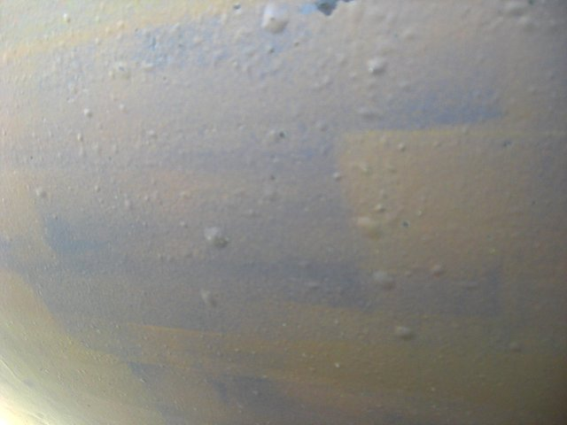
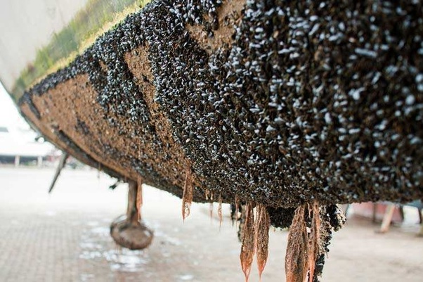
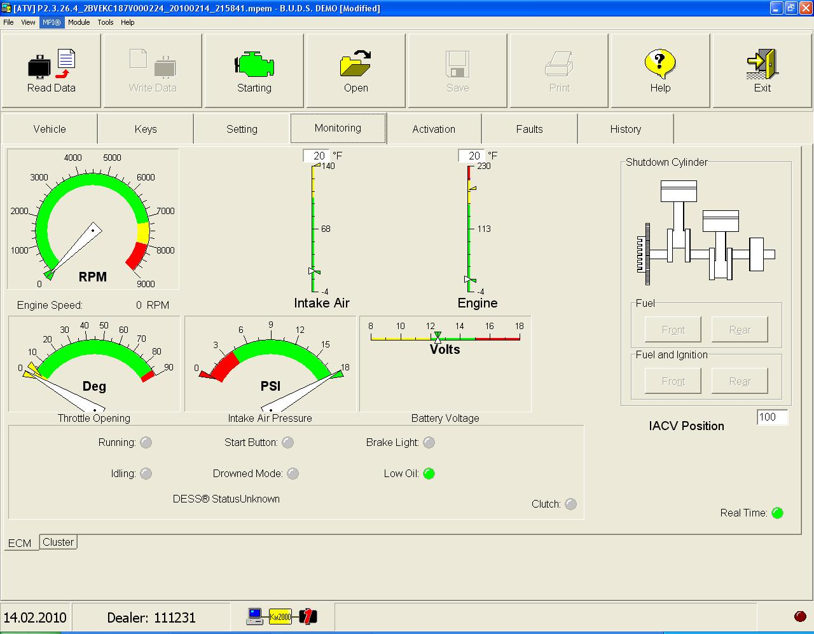
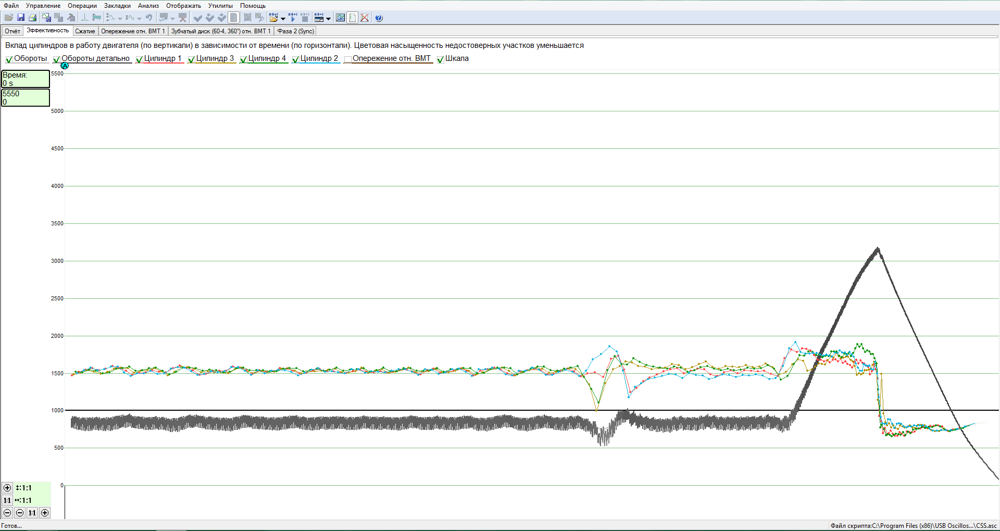
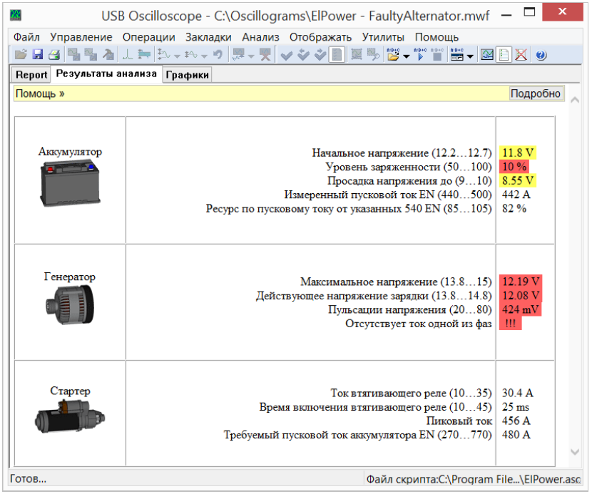

Pakalpojumu apraksts
Stiklaplasta izstrādājumu un laivu korpusu remonts
Poliestera stikla šķiedras laivu korpusu ar garumu līdz 5m, citu stiklaplasta izstrādājumu nesošās struktūras atjaunošana.
Pārklājuma atjaunošana ar gelkoutu standarta krāsu toņos (balta, melne, zaļa, dzeltena, sarkana, zila), izmantojot gelkouta pulverizatoru ar sekojošu slīpēšanu un pulēšanu. Iespējama individuāla krāsu toņu iejaukšana apjomā sākot no 20kg.
Pārklājuma atjaunošana ar poliuretāna krāsu ar pulverizatoru.
Gelkouta virsmu pulēšana.
Osmozes skarto virsmu atjaunošana, ieskaitot osmozes skarto stiklašķiedras slāņu remontu.

Neapaugošās krāsas uzklāšana, piemērojama peldlīdzekļiem, kas atrodas ūdenstilpnē visas sezones garumā.

BRP Seadoo, Skidoo, ATV diagnostika un remonts
Kompjūter diagnostika, izmantojot BRP skaneri. Izmantojot skaneri iespējams nolasīt dzinēja elektroniskajā vadības blokā uzkrātās kļūdas, dzēst kļūdas, veikt devēju rādījumu nolasīšanu motora darbības laikā, veikt nepieciešamo izpildmehānismu adaptāciju, elektroniskā vadības bloka programmēšanu. Jaunu dess key pierakstīšana. Motorstundu anulēšana pēc dzinēja kapitālā remonta.

Dzinēja diagnostika izmantojot automobiļu oscilogrāfu (motortesteri)
Dzinēja devēju un izpildmehānismu individuāla testēšana.
Skripts CSS dzinēja darbības pārbaudei. Ļauj novērtēt un salīdzināt katra cilindra darbību visā noslodzes un apgriezienu diapazonā. Šo testu izmanto dzinēja nevienmērīgas darbības cēloņu atklāšanai. Tiek novērtēta dinamiskā kompresija degmaisījuma sagatavošana individuāli katrā cilindrā.

Dzinēju tehniskā apkope.
Eļļas, filtru nomaiņa.
Gāzu sadales mehānisma piedziņas ķēdes nomaiņa.
Elektro sistēmas diagnostika un remonts
Spēka elektrikas sistēmas novērtēšana (akumulators, starteris, ģenerators).
Diagnostika tiek veikta izmantojot automobiļu oscilogrāfu (motortesteri), skripts ElPower.
Ātri un efektīvi, bez komponentu noņemšanas, tiek novērtēti akumulatora, startera un ģeneratora tehniskias stāvoklis.

Apgaismes, dažādu elektrisko sistēmu pārbaude un remonts.
Transmisijas un ritošās daļas diagnostika un remonts
Sea doo ūdensmetēju impelleru nomaiņa.
Ski doo sniega motociklu, ATV kvadriciklu piekares mehānismu remonts.
ATV kvadriciklu bremžu sistēmas diagnostika un remonts.